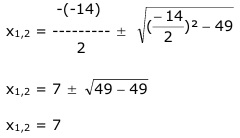
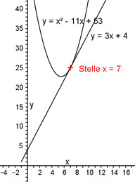

Aufgabe 82 An welchen Stellen x schneiden sich die Parabel y = x2 - 11x + 53 und die Gerade y = 3x + 4? Für die Schnittpunkte gilt: x2 - 11x + 53 = 3x + 4 |-3x x2 - 14x + 53 = 4 |-4 x2 - 14x + 49 = 0 p, q – Formel: p = -14 ; q = 49  x1,2 = 7 Die identischen Lösungen der Gleichung haben die Bedeutung, dass ein Berührpunkt an der Stelle x = 7 vorliegt. 